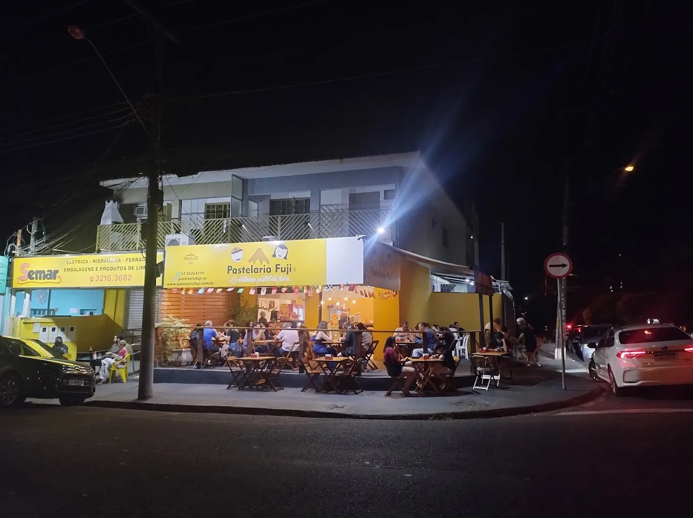
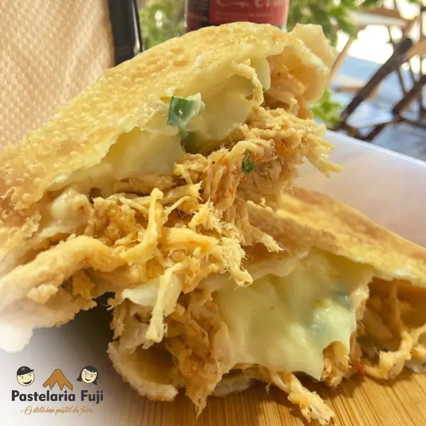
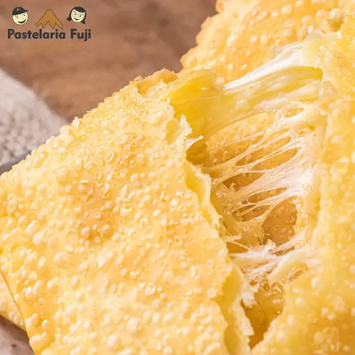
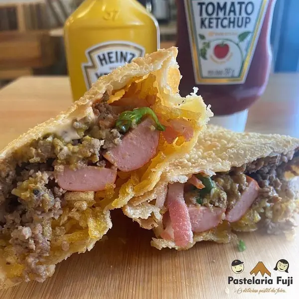
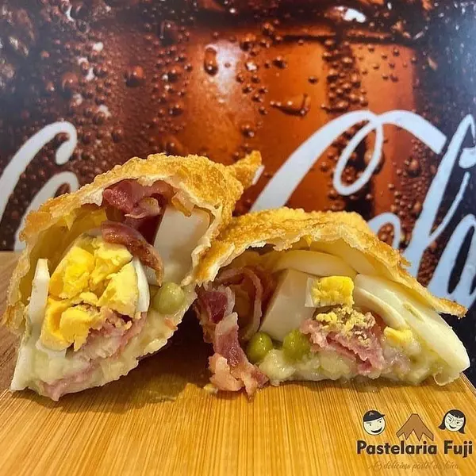
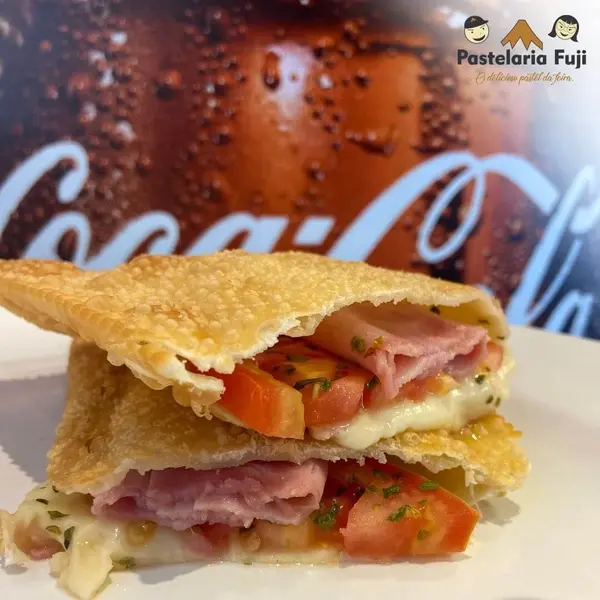
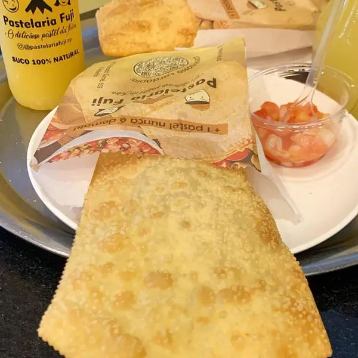
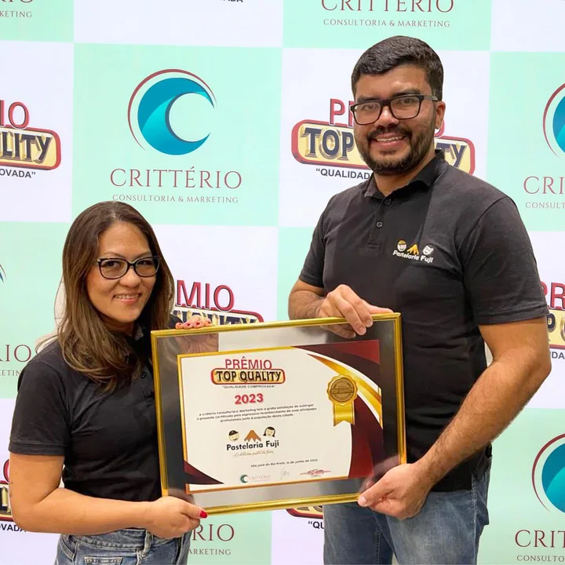

Desde 1976Pastelaria Fuji · São José do Rio Preto
O delicioso
pastel da feira.
Crocante por fora, generoso por dentro e frito na hora do pedido. Há 50 anos é assim que a Fuji faz pastel em São José do Rio Preto, das feiras livres até as nossas lojas.
- 50 anos de pastel
- Lojas e feiras em Rio Preto
- Frito na hora
Feitos na hora
Os clássicos da casa
Uma prova do que sai da nossa cozinha. No cardápio são mais de 80 itens entre pastéis, salgados, doces e bebidas.






Festas e eventos
Festa boa tem mini pastel.
Mini pastéis de 10 cm, fritos na hora, para aniversário, reunião da empresa e confraternização. Escolha entre carne, queijo, palmito, presunto e queijo, frango com Catupiry e carne com queijo.
- 1 unidadeR$ 6,00
- 5 unidadesR$ 24,90
- 10 unidadesR$ 44,90
- 15 unidadesR$ 63,00
- 30 unidadesR$ 118,90

Nossa história
50 anos de feira, de família e de pastel.
A Fuji nasceu em São Paulo, em 1976. Um ano depois, seu Daniel e a esposa, D. Isabel, trouxeram a pastelaria para São José do Rio Preto e montaram a barraca nas feiras livres da cidade.
Vieram com uma novidade da capital: a barraca de inox. Foram os primeiros a usar essa estrutura em Rio Preto, e o pastel que saía dali logo virou parada obrigatória de quem ia à feira.
A feira continua no nosso calendário, e hoje o mesmo pastel também tem endereço fixo: lojas no Jardim Walkíria, no Centro e no Max Muffato do Jardim Seyon. A receita não mudou. Cada pastel é montado e frito na hora do pedido, porque qualidade, para a gente, é inegociável.
- 1976A Fuji nasce em São Paulo
- 1977Seu Daniel e D. Isabel chegam às feiras de Rio Preto
- 2023Prêmio Top Quality
- 202650 anos, com lojas e feiras na cidade
Onde estamos
Lojas e feiras em Rio Preto
Passe para comer na hora ou peça para levar. As duas lojas abaixo atendem pelo mesmo WhatsApp.
Unidade Jd. Walkíria
R. Abrão Thomé, 629 · Jardim Walkíria
São José do Rio Preto, SP · 15085-400
Bateu a fome?
Escolha no cardápio e mande o pedido pelo WhatsApp. O pastel vai para o óleo quando o seu pedido chega.